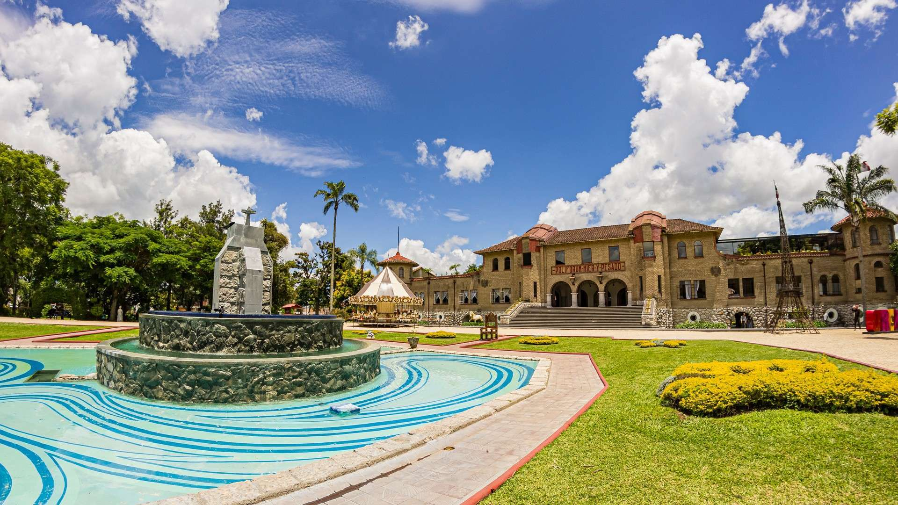
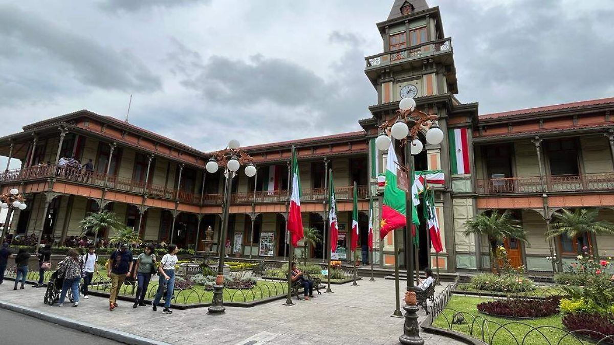
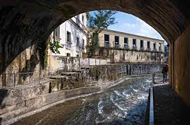
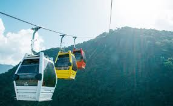
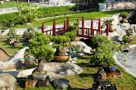

Principales lugares turisticos
| Lugar | Horario | Costos | Descripcion |
|---|---|---|---|
|  | Lunes a domingo: 10:00 a 19:00 horas | -Orizabeños y niños menores a 1.10 m: Entrada libre -Turistas y foráneos: Pase Turístico Poliforum $25.00 |
Un hermoso edificio de estilo francés que alberga museos, jardines y espacios culturales. Es un punto clave para la historia y el arte en Orizaba. |
|  | Lunes a domingo: 9:00 a 19:00 horas | -Orizabeños y niños menores a 1.10 m: Entrada libre -Turistas y foráneos: Acceso con Pase Turístico Poliforum $25.00 |
Un icónico edificio diseñado por Gustave Eiffel, construido completamente de hierro. Actualmente es un centro cultural con museos y exposiciones. |
|  | Abierto las 24 horas | Entrada libre | Un recorrido natural a lo largo del río Orizaba, con senderos, puentes y áreas verdes. Alberga el Paseo del Río Aventura, donde se pueden observar animales en hábitats abiertos. |
|  | Lunes a domingo: 10:00 a 18:00 horas | -Orizabeños y niños menores a 1.10 m: Entrada libre -Turistas y foráneos: Boleto de teleférico $50.00 |
El teleférico conecta el centro de Orizaba con el Cerro del Borrego, un sitio histórico con vistas impresionantes y un ecoparque con senderos naturales. |
|  | Lunes a domingo: 10:00 a 18:00 horas | -Orizabeños: $30.00 (con credencial de residencia en Orizaba) -Tutistas y foráneos: $50.00 -Niños menores de 1.10 m y personas con capacidades diferentes: Entrada libre |
Un jardín botánico con una gran variedad de flora regional y áreas para la conservación del medio ambiente. Es un sitio ideal para la educación ambiental y la relajación en la naturaleza. |